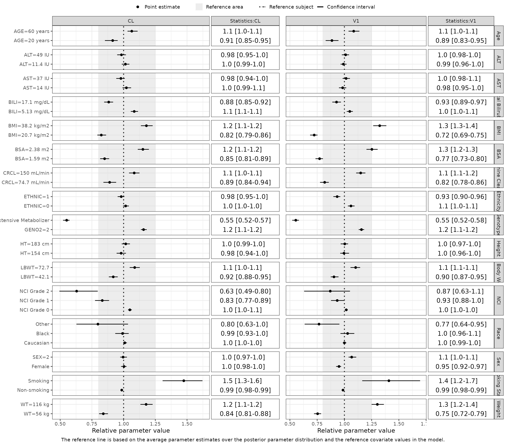

3. Deep Dive: Forest Plots
3-deep-dive-forest-plots.RmdIntroduction
This vignette explains how to use the PMXFrem and PMXForest packages to create a Forest plot based on a FREM run, incorporating its associated uncertainty.
The uncertainty may stem from a NONMEM covariance step (a .cov file), a PsN bootstrap/SIR run (a raw_results file), or a custom data frame of parameter vectors.
The workflow is divided into four stages:
- Pre-requisite Setup: Loading models, estimates, and parameter samples.
- Covariate Scenarios: Defining the specific covariate combinations to visualize.
- Data Generation: Computing the relative parameter changes and their confidence intervals.
- Visualization: Rendering the Forest plot with programmatic, robust labeling.
1. Pre-requisite Setup
First, we load the required packages and extract the base file paths, parameter estimates, and covariate names from our converged FREM model.
library(PMXFrem)
library(PMXForest)
library(ggplot2)
library(dplyr)
library(data.table)
# Enforce a clean global theme
theme_set(theme_bw(base_size = 14))
set.seed(865765)
# Identify the FREM run and collect file paths
runname <- "run31"
modDevDir <- system.file("extdata/SimNeb", package = "PMXFrem")
fremFiles <- getFileNames(modName = runname, modDevDir = modDevDir)
# Extract final parameter estimates and annotated covariate names
dfExt <- subset(getExt(extFile = fremFiles$ext), ITERATION == "-1000000000")
covNames <- getCovNames(modFile = fremFiles$mod) Next, we extract the uncertainty distribution. In this example, we draw 175 multivariate normal samples using the variance-covariance matrix from the NONMEM .cov file.
# Get 175 samples from the .cov file
dfParameters <- getSamples(fremFiles$cov, extFile = fremFiles$ext, n = 175)
# Enforce the first row as the final deterministic estimates
dfParameters[1, ] <- dfExt[1, -1]The Parameter Function
We must define a list of functions specifying how the parameters are calculated. Because we are plotting the typical parameter value for a given covariate, these functions only utilize the fixed effects.
Note that the functional form for the covariate-parameter relationships depends on the parameter functional form (usually log-normal): \[CL = \theta_{CL} \cdot \exp(\eta_{CL})\]
As well as the covariate form in the FREM model (usually normal): \[COV = \theta_{COV} + \eta_{COV}\]
# The parameter function list for log-normal parameters
functionList <- list(
function(basethetas, covthetas, ...) { return(basethetas[1] * exp(covthetas[1])) },
function(basethetas, covthetas, ...) { return(basethetas[2] * exp(covthetas[2])) }
)
functionListName <- c("CL", "V1")2. Defining Covariate Scenarios
We need to define the specific covariate combinations (univariable or multivariable) to plot. A value of -99 or NA indicates that the covariate is at the reference (population typical) value.
While you can build this matrix manually, PMXForest::getCovStats() is the recommended approach. It automatically scans your clinical dataset and calculates the 5th and 95th percentiles (or your chosen quantiles) for continuous covariates, and identifies categorical levels.
# Load clinical data
data <- fread(system.file("extdata/SimNeb/DAT-2-MI-PMX-2-onlyTYPE2-new.csv", package="PMXFrem"))
# Generate covariate matrix dynamically using the 5th and 90th percentiles
dfCovs <- createInputForestData(
getCovStats(data, covNames$orgCovNames, probs = c(0.05, 0.90), missVal = -99),
iMiss = -99
)
head(dfCovs, 5)
#> AGE ALT AST BILI BMI BSA CRCL ETHNIC GENO2 HT LBWT NCIL_1 NCIL_2 RACEL_2
#> 1 20 -99.0 -99 -99 -99 -99 -99 -99 -99 -99 -99 -99 -99 -99
#> 2 60 -99.0 -99 -99 -99 -99 -99 -99 -99 -99 -99 -99 -99 -99
#> 3 -99 11.4 -99 -99 -99 -99 -99 -99 -99 -99 -99 -99 -99 -99
#> 4 -99 49.0 -99 -99 -99 -99 -99 -99 -99 -99 -99 -99 -99 -99
#> 5 -99 -99.0 14 -99 -99 -99 -99 -99 -99 -99 -99 -99 -99 -99
#> RACEL_3 SEX SMOK WT COVARIATEGROUPS
#> 1 -99 -99 -99 -99 AGE
#> 2 -99 -99 -99 -99 AGE
#> 3 -99 -99 -99 -99 ALT
#> 4 -99 -99 -99 -99 ALT
#> 5 -99 -99 -99 -99 AST3. Generate Forest Plot Data
With our scenarios defined, we pass everything to getForestDFFREM(). This function computes the relative parameter changes across all bootstrapped/sampled parameter vectors to construct the confidence intervals.
dfres <- getForestDFFREM(
dfCovs = dfCovs,
numNonFREMThetas = 7,
numSkipOm = 2,
dfParameters = dfParameters,
covNames = covNames$covNames,
functionList = functionList,
functionListName = functionListName,
quiet = TRUE
)4. Visualization & Labeling
Hardcoding dozens of row labels is dangerous and non-reproducible. Instead, we use PMXFrem::generateCovNames(). This utility function parses the dfCovs scenarios and applies user-defined unit mappings and categorical translations dynamically.
# 1. Define translation maps
unit_map <- c(
AGE = "years", WT = "kg", BMI = "kg/m2", BSA = "m2",
CRCL = "mL/min", BILI = "mg/dL", AST = "IU", ALT = "IU",
HT = "cm", LBM = "kg"
)
label_map <- c(
"SEX=0" = "Male", "SEX=1" = "Female",
"RACEL=1" = "Caucasian", "RACEL=2" = "Black", "RACEL=3" = "Other", "RACEL=4" = "Hispanic",
"SMOK=0" = "Non-smoking", "SMOK=1" = "Smoking",
"NCIL=0" = "NCI Grade 0", "NCIL=1" = "NCI Grade 1", "NCIL=2" = "NCI Grade 2",
"GENO2=0" = "Poor Metabolizer", "GENO2=1" = "Extensive Metabolizer"
)
# 2. Generate and map robust row labels directly to the results
dfres_formatted <- generateCovNames(
dfCovs,
dfres = dfres,
unit_map = unit_map,
label_map = label_map
)
# 3. Define group headers (y-axis facets)
group_headers <- c(
"Age", "ALT", "AST", "Total Bilirubin", "BMI", "BSA",
"Creatinine Clearance", "Ethnicity", "Genotype", "Height",
"Lean Body Weight", "NCI", "Race", "Sex", "Smoking Status", "Weight"
)
# 4. Render Plot
forestPlot(
dfres_formatted,
groupNameLabels = group_headers,
tabTextSize = 14,
strip_right_size = 11
)